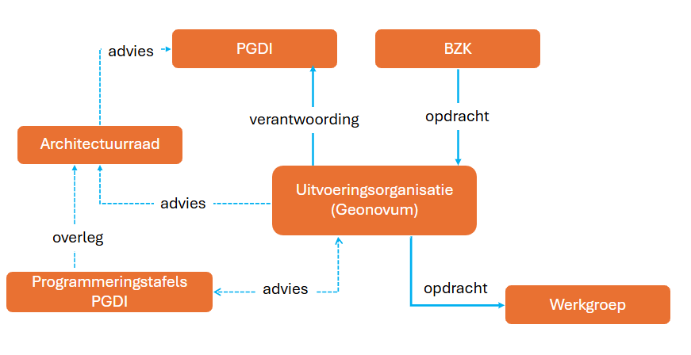

Geonovum ontwikkelt en beheert DCAT-AP-NL in opdracht van het Ministerie van Binnenlandse Zaken en Koninkrijksrelaties (BZK), Directie digitale samenleving.
Het opstellen en gebruik van het protocol is onderdeel van het beheerproces van een standaard. Geonovum voert het beheer en de doorontwikkeling van standaarden, waaronder DCAT-AP-NL, uit conform het beheer- en ontwikkelmodel voor open standaarden: BOMOS.
Wijzigingen in DCAT-AP-NL worden niet zomaar doorgevoerd; voor de ene gebruiker van de stamdaard zal de wijzing gering zijn, voor de ander kan het grote gevolgen hebben. Daar houden wij rekening mee. De gebruikersgroepen van de standaarden en andere betrokkenen in het wijzigingsproces zijn vastgelegd, evenals de belangrijkste taken en verantwoordelijkheden en de momenten waarop zij betrokken zijn in dit proces.
In dit wijzigingsprotocol staan de sturende principes achter het wijzigingsproces voor deze standaard. Met het protocol wordt elke wijziging van DCAT-AP-NL een voorspelbaar proces voor de ketenpartners en gebruikers. In het protocol zijn basisbegrippen en uitgangspunten uiteengezet voor het wijzigingsproces, bijvoorbeeld wat onder nieuwe en volgende versies verstaan wordt, en wanneer deze nieuwe versie(s) verwacht mogen worden.
| Begrip |
Toelichting |
| Wijzigingsprotocol |
Hiermee wordt het geheel van vastgelegde regels en afspraken voor het wijzigen van de standaard vastgelegd. |
| Wijzigingsproces |
Het wijzigingsproces is de daadwerkelijke wijziging van de standaard op een bepaald moment. Het volledige wijzigingsproces doorloopt de fasen van het wijzigingsprotocol met een datum van inwerkingtreding van de nieuwe standaard. |
| Wijzigingsverzoek |
Een wijzigingsverzoek is door een actor ingediend bij Geonovum, de beheerder van de standaard; de standaard moet op een bepaald punt met deze reden worden aangepast of aangevuld of niet. Een wijzigingsverzoek dat niet wordt ingewilligd, wordt beargumenteerd afgewezen. Een ingediende wens of gevonden fout voor de standaard noemen we een wijzigingsverzoek. |
| Wijzigingsvoorstel |
In het wijzigingsproces worden de wijzigingsverzoeken die daarin worden meegenomen gebundeld tot één wijzigingsvoorstel. |
| Werkgroep |
De werkgroep levert input voor de impactanalyses van de wijzigingsverzoeken aan het beheerteam van DCAT-AP-NL (Geonovum). |
Het protocol schrijft een vast stramien voor het wijzigen van de standaard voor. Het protocol benoemt de fasen en de op te leveren resultaten. Belangrijk zijn de randvoorwaarden en uitgangspunten. De gebruikers van DCAT-AP-NL betrekken wij bij het wijzigen van de standaard. We zetten op een rij welke betrokkenen er zijn.
De titel van dit document geeft aan dat het hier om een protocol gaat. Toch wordt in dit document ook gesproken over processen. Een wijzigingsprotocol beschrijft de manier waarop wijzigingen in de standaard plaatsvindt: het wijzigingsproces. In het protocol zijn basisbegrippen en uitgangspunten uiteengezet voor het wijzigingsproces, bijvoorbeeld wat onder nieuwe en volgende versies verstaan wordt en wanneer deze verwacht mogen worden. De daadwerkelijke planning van een nieuwe versie wordt in overleg met de opdrachtgever en eigenaar van de standaard opgesteld.
Met behulp van een wijzigingsprotocol voor de standaard geeft Geonovum:
- inzicht in het behandel- en besluitproces dat ten grondslag ligt aan het versiebeheer;
- inzicht in de aangeboden wijzigingsvoorstellen;
- stabiliteit aan de standaard;
- continuïteit aan de standaard;
- een eenduidige aanpak.
Een release van een standaard is een nieuwe uitgave van de standaard. De nieuwe release kenmerkt zich ten opzichte van de oude versie door een hoger versienummer. Een release betreft 1 product van een standaard of is een bundel van meerdere producten van de betreffende standaard. Bij de release is ieder product is voorzien een nieuw versienummer conform X.Y.Z schrijfwijze (zie hierna) en een status.
Bij een standaard in beheer horen ook afspraken over het versiebeheer. Versies van een standaard zijn er in verschillende gradaties die elk een relatie hebben met een voorgaande versie. De wijzigingen documenteren wij en leggen wij vast in een apart document bij de uitgebrachte versie van de standaard. De gebruiker kan zo nagaan op welke plaatsen de betreffende standaard gewijzigd is.
Elk product van onze standaarden voorzien wij van een versienummer. Dit doen wij conform Semantic Versioning (SemVer). Elk product heeft zijn eigen versienummer conform X.Y.Z schrijfwijze, bijvoorbeeld versie 2.1.0 (=X.Y.Z):
- X-wijzigingen Deze wijzigingen veranderen de structuur van de standaard. Hierdoor zijn X-wijzigingen niet backwards compatible. Frequentie: in overleg met de opdrachtgever.
- Y-wijzigingen Dit zijn wijzigingen die niet de structuur veranderen. Dit kunnen bijvoorbeeld updates zijn of inhoudelijke aanpassingen aan objecten, attributen of waardelijsten of de reikwijdte van de standaard. Deze wijzigingen zijn backwards compatible. Frequentie: in overleg met de opdrachtgever.
- Z-wijzigingen Dit zijn in feite oplossingen van technische fouten of verbeteringen van technische aard. Deze wijzigingen zijn backwards compatible. Frequentie: zo spoedig mogelijk na constatering.
Na het uitbrengen van een nieuwe versie blijven oudere versies beschikbaar en zijn vindbaar via de Geonovum website en de registers (de conceptenbibliotheek , het technisch register en het documentenregister ). Een nieuwe versie dwingt daarmee geen directe overstap af bij de gebruikers, tenzij anders (bijvoorbeeld wettelijk) bepaald. Na het uitbrengen van de nieuwe versie wordt de ontwikkeling van de oude versie stopgezet.
Voor het onderhoud en de ondersteuning van een oude versie gelden de volgende uitgangspunten:
- Aan een oude versie worden geen nieuwe features toegevoegd, geen aanpassingen gedaan op X en Y niveau na het uitbrengen van een nieuwe versie. Verzoeken om aanpassing en wijziging voor nieuwe functionaliteit worden niet meer voor de oude standaard in behandeling genomen maar doorgegeven aan het ontwikkelteam. Correcties (Z-wijzigingen) worden wel uitgevoerd op de vorige versies zolang deze nog ondersteund worden.
- Bij oplevering van een nieuwe versie wordt de voorgaande versie nog een van te voren vastgestelde periode ondersteund. De duur van de overgangsperiode wordt mede bepaald door de omvang van de wijzigingen (X, Y en Z wijzigingen op de vorige versies), de staat van ontwikkeling van de standaard, en of de standaard in voorlopig dan wel permanent beheer is.
In paragraaf Oudere versies van de standaard zijn de X, Y en Z wijzigingen uitgelegd. Voor wijzigingen kent Geonovum twee proces varianten. Eén voor X en Y wijzigingen en één voor Z wijzigingen.
Proces voor X en Y wijzigingen
Deze vergen volledige afstemming en het doorlopen van alle in paragraaf Fasen en resultaten beschreven fasen: Inhoud, Toetsing, Besluitvorming en Implementatie. Voor de inhoudelijke fase wordt een werkgroep gestart met daarin vertegenwoordiging van belangrijke stakeholders. Het resultaat van de werkgroep wordt in een openbare consultatie getoetst.
PGDI beoordeelt en beslist over de wijzigingsvoorstellen en stelt een nieuwe (versie) van de standaard vast van DCAT-AP-NL die bij Geonovum in beheer is. Deze wijzigingsvoorstellen worden eerst inhoudelijke behandeld door de Architectuurraad, resulterend in een advies aan de PGDI. De programmeringstafels worden eerder in het ontwikkeltraject van een standaard te betrokken. Indien nodig wordt met softwareleveranciers een convenant afgesloten of een bestaand convenant uitgebreid, waarin wordt afgesproken dat zij (onderdelen van) de standaard gaan ondersteunen.
Proces voor Z wijzigingen
Deze dienen zo snel als mogelijk uitgevoerd te worden. De inhoudelijke fase wordt door een medewerker van Geonovum gedaan. Toetsing vindt plaats d.m.v. een (beperkte) consultatie met stakeholders. Besluitvorming vindt plaats door het standaardenteam van Geonovum met een notificatie van de wijziging aan de architectuurraad. Implementatie vindt plaats door het publiceren van de wijziging op de website van Geonovum.
Het volledige wijzigingsproces doorloopt de fasen Inhoud, Toetsing, Besluitvorming en Implementatie, zoals weergegeven in onderstaand figuur.
Figuur: Fasen wijzigingsproces

Inhoud
In de fase inhoud wordt voor iedere melding bepaald of deze wordt opgenomen in de nieuwe versie van de standaard of niet. Dit wordt vastgelegd in de Github issues van de DCAT-AP-NL repository en is daarmee zichtbaar voor iedere geinteresseerde. Door het gebruik van labels bij de issues is zichtbaar welke issues vragen zijn en welke issues wijzigingsvoorstellen zijn. Voor issues die worden meegenomen in de nieuwe versie van de standaard, worden oplossingen uitgewerkt, op basis waarvan vervolgens de specificatie wordt aangepast. Dit gebeurt door Geonovum in samenwerking met inhoudelijke experts. Afhankelijk van de omvang van de wijziging ten opzichte van de voorgaande versie is de groep van experts evenredig groter of kleiner.
Toetsing
De fase Toetsing vormt een brug tussen de inhoud, besluitvorming en de implementatie. In deze fase wordt eenieder (X, Y wijziging) of een beperkte groep belanghebbenden (Z wijziging) uitgenodigd om zijn visie te geven op de nieuwe versie van de standaard. De reacties uit de consultatie worden verwerkt in de specificatie.
Besluitvorming
Bij Besluitvorming wordt besloten om de gewijzigde specificatie vast te stellen en te publiceren. Afhankelijk van het type wijziging (X, Y of Z), zie paragraaf Proces varianten, besluit PGDI dan wel het standaardenteam van Geonovum. Eenmaal vastgesteld en gepubliceerd, wordt de nieuwe versie van de standaard aangemeld bij het Forum Standaardisatie.
Implementatie
Het in gebruik nemen van de standaard in de praktijk staat centraal in deze fase. Onderdeel van de standaard zijn SHACL profielen, waarmee de technische juistheid van de implementatie van de standaard kan worden getoetst. Geonovum ondersteunt de implementatie bovendien door de werking van de standaard toe te lichten op bijvoorbeeld een wiki en het aanbieden van voorbeeldbestanden. Resultaat van deze fase is dat de gebruikers metadata kunnen maken en uitwisselen conform de nieuwe standaard. In hoofdstuk Implementatie lichten we de implementatie verder toe.
De volgende groepen en instanties zijn betrokken bij het wijzigingsproces van de standaard:
- Werkgroep;
- Architectuurraad PGDI;
- Programmeringstafels PGDI;
- PGDI;
- Forum Standaardisatie.
Werkgroep en portaal beheerders
Nieuwe versies van de standaard bereidt Geonovum voor in samenwerking met de werkgroep met daarin gebruikers en/of portaal beheerders. We streven naar een unanieme instemming met de standaard. Dit versterkt het draagvlak en zorgt voor een betere implementatie van de standaard in het werkveld.
PGDI
Bij het vaststellen van een nieuwe versie (X, Y) van een standaard stelt PGDI met advies van Geonovum, de PGDI programmeringstafels en de PGDI Architectuurraad vast hoelang een oude versie wordt ondersteund en wanneer een oude versie komt te vervallen. Het vaststellen van Z-wijzigingen (zie paragraaf Oudere versies van de standaard) wordt door Geonovum zelf uitgevoerd zonder tussenkomst van de PGDI.
De aanleiding voor een wijzigingsproces is gebaseerd op meldingen: de wensen en gevonden fouten in de standaard, die aanleiding zijn om de standaard te vernieuwen. Samen vormen zij het wijzigingsvoorstel. Geonovum neemt als beheerder het initiatief om een wijzigingsproces te starten.
Belanghebbenden kunnen meldingen (wijzigingsverzoeken), variërend van wensen tot aanpassing van en fouten in DCAT-AP-NL, indienen bij Geonovum via de Github repository van DCAT-AP-NL. Wij geven inzicht in de ontvangen en beoordeelde meldingen en bundelen de gehonoreerde verzoeken tot een wijzigingsvoorstel, in het geval we een wijzigingsproces starten voor een nieuwe versie van de standaard. Het wijzigingsprotocol beschrijft het wijzigingsproces en daarmee ook de procedure die het wijzigingsvoorstel doorloopt.
Ontwikkelingen in de standaarden kunnen om verschillende redenen gewenst zijn, waaronder:
- geconstateerde fout in de standaard;
- wens tot wijziging, uitbreiding of vereenvoudiging uit de praktijk;
- aanpassing van de standaard door internationale ontwikkelingen.
Met behulp van het wijzigingsprotocol wordt de geplande wijziging van de standaard uitgevoerd. In de aanloop naar een wijziging van de standaard bundelt Geonovum de meldingen, verzoeken tot wijziging, in een wijzigingsvoorstel. Het wijzigingsvoorstel vormt de basis voor een werkgroep om een nieuwe versie van de standaard op te stellen. Met behulp van onder andere een publieke consultatie leggen wij de nieuwe versie van de standaard voor aan de praktijk en vragen hun feedback.
De meldingen en wijzigingsverzoeken alsook (inter)nationale ontwikkelingen geven aanleiding tot de verdere ontwikkeling voor een standaard. Zij worden gebundeld in een wijzigingsvoorstel. Het wijzigingsprotocol geeft richting aan het wijzigingsproces dat dit wijzigingsvoorstel doorloopt. In onderstaand figuur is de organisatie van het ontwikkelen en beheren van DCAT-AP-NL geschetst.
Figuur: Organisatiestructuur voor beheer DCAT-AP-NL

Dit figuur toont de betrokken partijen bij het ontwikkelen en beheren van DCAT-AP-NL.
De werkgroep beoordeelt de impact van het wijzigingsvoorstel vanuit de inhoudelijke expertise. Dit resulteert in een definitief concept van de nieuwe versie van de standaard. De programmeringstafels en de architectuurraad beoordelen een definitief concept. Als de Architectuurraad (van PGDI) het definitieve concept van een positief advies voorzien gaat het defintieve concept ter goedkeuring naar PGDI.Keurt zij het goed, dan is er een nieuwe standaard. Keurt zij het af, dan gaat het concept terug naar de werkgroep.
Bij het vaststellen van een nieuwe versie van een standaard stelt PGDI met advies van de architectuurraad en Geonovum vast hoelang een oude versie wordt ondersteund en wanneer een oude versie komt te vervallen.
PGDI beslist, op advies van de architectuurraad en Geonovum, of zij een vastgestelde standaard voordraagt voor opname op de pas-toe-of-leg-uit-lijst voor open standaarden. Bij een positief besluit verzorgt Geonovum de voordracht bij het Forum Standaardisatie.
In voorgaande hoofdstukken gaat het protocol ervan uit dat er wijzigingen "in vrijheid" worden doorgevoerd. In het primaire proces wordt geen rekening gehouden met noodzakelijke wijzigingen die met spoed of onder druk van bijvoorbeeld externe nieuwe regelgeving moeten worden doorgevoerd. Dit is mogelijk middels een escalatieprocedure.
We doorlopen een escalatieprocedure als er een wijziging noodzakelijk is die niet in het reguliere wijzigingsproces doorgevoerd kan worden, omdat dit te lang duurt. Een uitputtende lijst met situaties en criteria wanneer dit van toepassing is, valt op voorhand niet te geven. Maar voor de beeldvorming: het gaat om situaties waarbij het niet doorvoeren van een bepaalde noodzakelijke wijziging leidt tot onaanvaardbare risico's voor de uitvoeringspraktijk of het onmogelijk uitvoeren (vanwege bijvoorbeeld tegenstrijdige wetten) van werkzaamheden.
De escalatieprocedure wordt niet gebruikt om reguliere wijzigingen sneller door te kunnen voeren.
Er wordt geen vast proces gegeven om de escalatieprocedure te doorlopen, omdat verschillende situaties wellicht tot een verschillende wijze van handelen moeten leiden. In plaats daarvan wordt aan de hand van een aantal sturende principes uiteengezet welke verantwoordelijkheden er zijn binnen een escalatieprocedure. Dit wordt hier onder geschetst.
Signalering
Uit het werkveld kunnen signalen ontstaan dat er met spoed iets gewijzigd zou moeten worden. Het is vooraf niet aan te geven uit welke kanalen deze geluiden zullen ontstaan. Het is wel van belang om de rol van Geonovum te onderkennen als antennefunctie voor het werkveld. In ieder geval zullen deze signalen op enig moment de opdrachtgever of Geonovum bereiken, en op dat moment zal er overleg gevoerd worden over deze signalen.
Overleg
Bij de besluitvorming binnen de escalatieprocedure wordt er in principe overleg gevoerd tussen de opdrachtgever, de programmeringstafels en Geonovum (het standaardenteam). De partijen raadplegen de betrokkenen daar waar nodig.
Besluitvorming
De beoordeling of de escalatieprocedure van toepassing is, wordt genomen door de architectuurraad. Ook het besluit welke wijzigingen er precies doorgevoerd moeten worden en op welke manier, wordt genomen door de architectuurraad.
Coördinatie
De coördinatie tijdens de escalatieprocedure wordt uitgevoerd door de voorzitter van de architectuurraad.
Communicatie met het werkveld
De communicatie met het werkveld wordt uitgevoerd door Geonovum. Als beheerder van de standaard wordt verwacht dat Geonovum het meest directe contact heeft met het werkveld.
Het betrekken van alle belanghebbenden in een wijzigingsproces is een belangrijk uitgangspunt van Geonovum. Eventuele klachten kunnen binnen de bestaande governancestructuren worden ingebracht, zoals beschreven in het beheerplan. Voor inhoudelijke klachten met betrekking op de standaard kunnen belanghebbenden zich richten tot de directie van Geonovum. De directie zal inhoudelijke klachten bespreken met de opdrachtgever, waarna de opdrachtgever beoordeelt hoe de klacht het beste binnen deze lijn kan worden geagendeerd.